内网穿透之ZeroTier布设虚拟局域网
前言
之前的文章（内网穿透介绍及FRP部署）介绍了什么是内网穿透，以及FRP这款内网穿透工具的部署使用，有些朋友要问了：
- 我没有也并不想买服务器，也不想买域名，也搞不懂或者懒得做端口映射；
- 我只需要能够远程访问我家的电脑、NAS等等设备，并不需要搭建网站、服务之类的；
- 你说的OpenVPN、FRP、NPS、Ngrok等这些内网穿透方案，连接的速度取决于做中转代理的服务器的最大带宽，也就是我服务器带宽5M，内网穿透的速度上限也只能是5M，太慢了！
那么我这里再给你介绍个免费的内网穿透工具：ZeroTier。
什么是ZeroTier
官方Github：https://github.com/zerotier
FRP、NPS等的共同特点都是需要一个带有公网ip的服务器做中心节点，通过反向代理的方式实现内网穿透，因而需要做各种端口映射。而ZeroTier则像一个全球大型交换机，通过P2PVPN这种方式实现你的多台设备连在同一个虚拟交换机下面从而实现穿透。
P2P通俗来讲就是Peer to Peer ，ZeroTier根服务器记录请求路径来做类似于DNS的解析。主要功能，就是可以把多个不同网络的设备连接在一起，用来就像在一个局域网下，而且这种方式下局域网设备之间的连接速度完全取决于你家里宽带的上行速度，不受其他任何的影响。
ZeroTier搭建
注册ZeroTier
https://my.zerotier.com |
点击上面的网址进去注册账号。
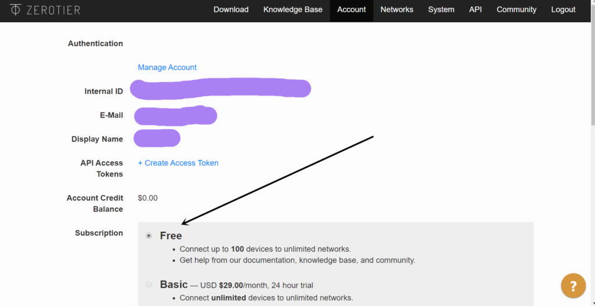
如上图所示即注册成功。免费版本提供100台设备之间的连接，对普通人来说够用了。
创建虚拟局域网
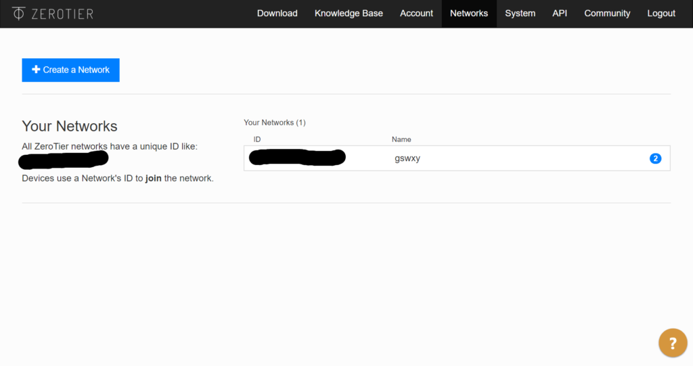
点击上方的“NetWorks”，点击“Create a NetWork”,即可出现“Your Networks (1)”，如图所示，“ID”下方的一串蓝色数字就是你虚拟局域网的网络ID，你的设备加入这个ID，即可处于同一虚拟局域网之中。
路由器上配置ZeroTier
ZeroTier客户端可以在很多设备上部署，比如PC、安卓手机、苹果手机、路由器、树莓派、群晖等等。但如果我们在路由器上部署，按我的教程做好设置的话，这个路由器下面所有的设备都可以不用再安装ZeroTier了，况且Xbox之类的也装不了ZeroTier，所以如果你想Xbox远程串流的话，只能在路由器上部署了。
这里我用OpentWrt系统的软路由做演示，当然能装ZeroTier插件的路由器都可以，比如LEDE、梅林等。这里强烈建议大家使用软路由，我家的联通宽带下行200M，使用软路由配合迅雷快鸟后，日常宽带下行在460兆左右，最高可以跑到500M。至于怎么做软路由，我之后会在其他教程中阐述。
开启IPV6及DHCPv6
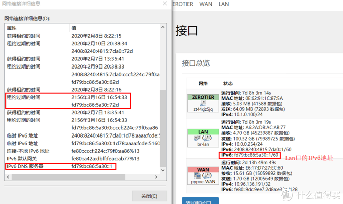
在OpenWrt上配置ZeroTier之前，首先配置网络接口中的Lan接口，开启IPv6及DHCPv6，特别是刷了固件的硬路由。因为L大的固件对ZeroTier开启的虚拟接口配置了防火墙，但是ZeroTier在加入核心网络并允许节点入网后虚拟接口会发生一次变更，如果你没有按我下面的教程仔细核对接口的话，变更会导致Lan口上的IPv4网络全部被封在防火墙内部不能访问。
这时候如果是硬路由没法接显示器这时候就只能重刷固件，如果是软路由还能接显示器和键盘抢救一下，而如果你开启了IPV6就可以用IPV6的地址访问路由器。开启的方法请自行百度，每个人的情况不一样。开启之后之后记得确认接入设备是否获取到了IPv6地址，fd打头的，非fe80开头。
安装配置ZeroTier客户端
安装ZeroTier路由器有两种情况，一种是你的Openwrt路由器已经安装了ZerTier插件，一种是没有安装，下面将分别说明：
已安装
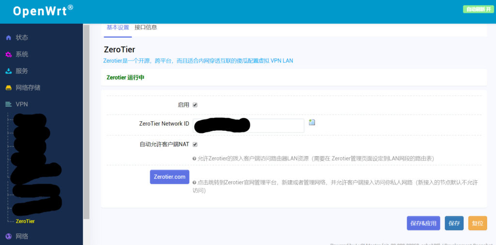
已经安装的直接勾选“启用”，在“ZeroTier Network ID”输入你刚才创建的虚拟局域网的网络ID，“保存应用”即可，如上图所示。
未安装
未安装的需要ssh进入路由器，输入以下命令进行安装：
opkg update && opkg install zerotier |
安装完成后，输入以下命令加入你的虚拟局域网：
zerotier-cli join ID |
其中ID需要更换为你虚拟局域网的网络ID。
允许加入
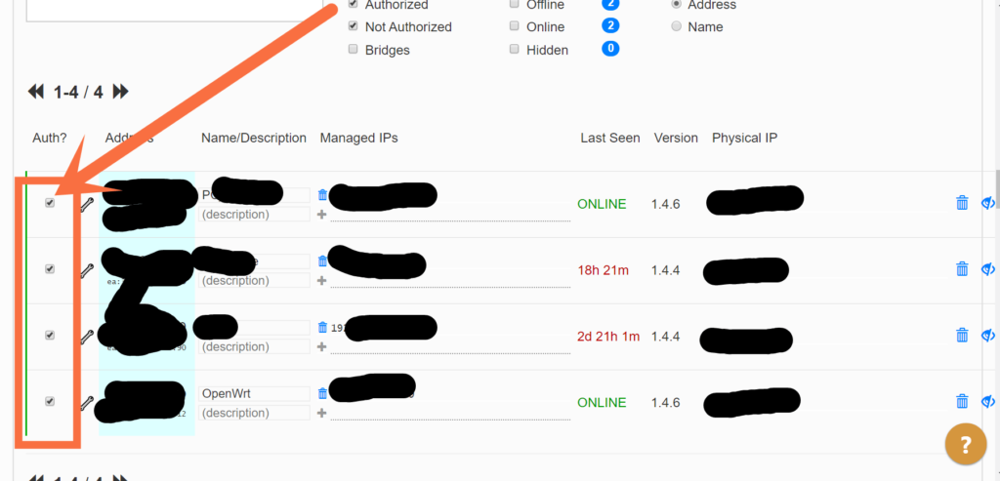
你在创建虚拟局域网的时候，会默认这个虚拟局域网为私人模式，私人模式在客户端加入的时候，需要你手动勾选同意这个客户端加入。
在ZeroTier官网登录后，点击“NetWorks”，点击你创建的虚拟局域网（蓝色ID号），进去后往下拉，如上图所示勾选加入，其中“Managed IPs”这一列是你客户端（路由器的）在虚拟局域网的IP地址，要记住！这里假设为“192.168.168.168”，同时点击小扳手图标，勾选“Allow Ethernet Bridging”（仅客户端为路由器需要勾选此项）。
创建接口及防火墙
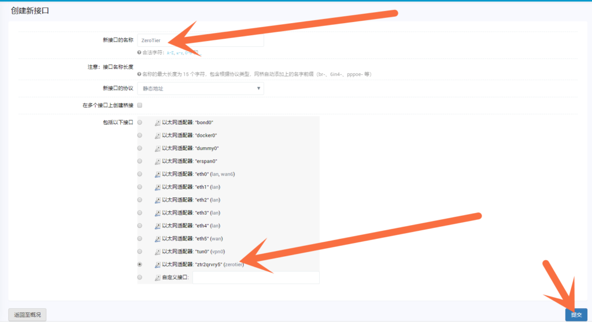
点击路由器的菜单“网络”——“接口”——“添加新接口”，如上图所示，在名字处填写“ZeroTier”（你可以输别的），在“包括以下接口”处选择括号里是“ZeroTier”的。
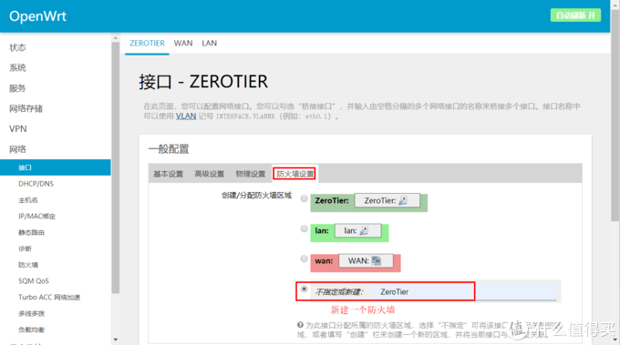
然后点击防火墙设置，选择“不指定或者新建”，名字设置为“ZeroTier”
（你可以输别的）。
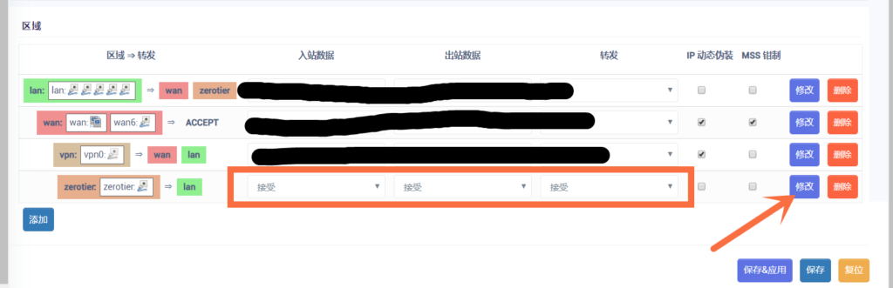
然后点击路由器的菜单“网络”——“防火墙”，往下拉“区域”，找到你刚才创建的防火墙，“入站数据”、“出站数据”和“转发”全部改为接受，然后点击“修改”。
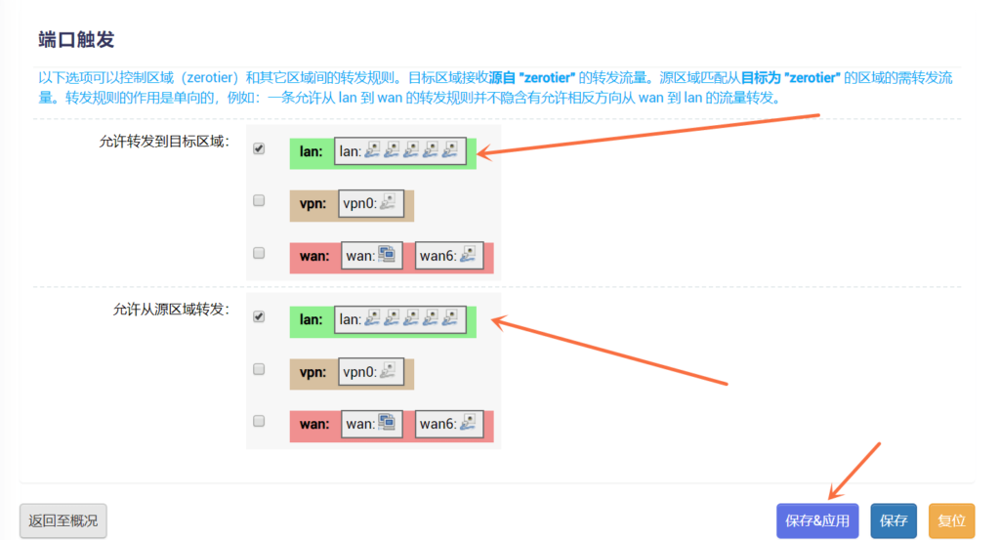
往下拉找到“端口触发”，“允许转发到目标区域”和“允许从源区域转发”都选择为LAN区域，如上图所示。
配置虚拟网络桥接路由
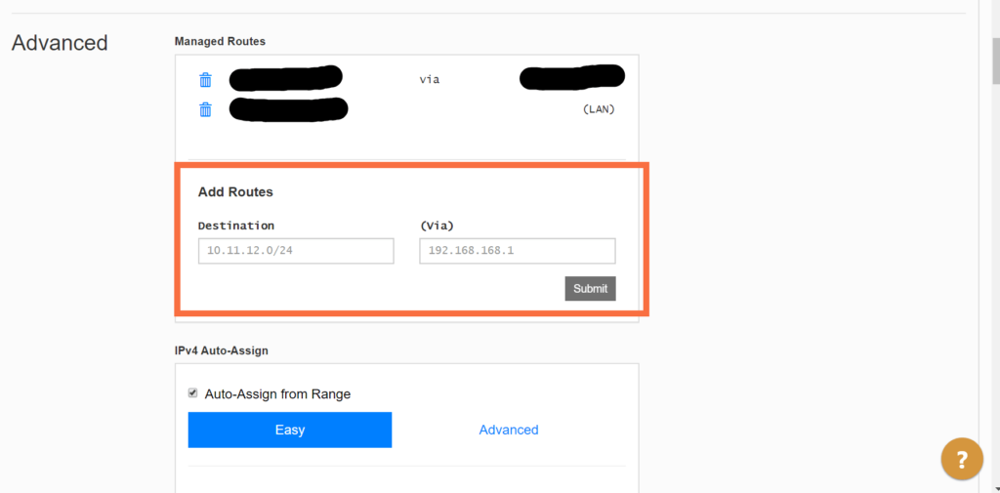
在ZeroTier官网登录后，点击“NetWorks”，点击你创建的虚拟局域网（蓝色ID号），进去后往下拉找到“Advanced”——“Add Routes”，假设你家的宽带IP地址范围为“10.11.12.XX”号段（不知道的请查看你自家电脑的IP地址），“Destination”下方的框就填写“10.11.12.0”，“(Via)”下方的框就填写你路由器的虚拟局域网IP地址“192.168.168.168”（上文已假设），然后点击“Submit”提交。
ZeroTier接口IP并对绑定接口进行校验
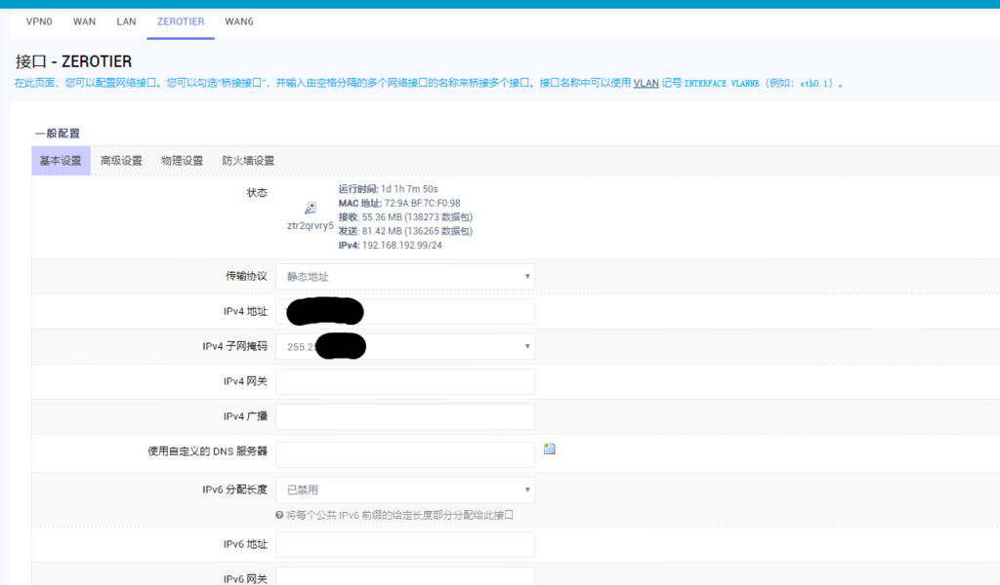
接着在Openwrt路由器上点击“网络”——“接口”——“网络”，找到你刚才建立的“ZeroTier”接口，选择后面的“修改”，“基本设置”里面“传输协议”更改为“静态地址”，“IPv4 地址”填入“192.168.168.168”，“IPv4 子网掩码”填入“255.255.255.0”，点击“保存应用”。
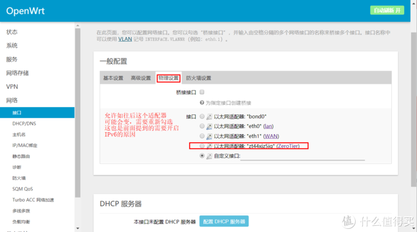
另外，点击“物理设置”，核对绑定接口是不是ZeroTier的接口，如果接口已经变更，需要重新勾选后重启下OpenWrt，否则可能导致OpenWrt的IPv4网络可能无法使用。
实现远控
http://www.zerotier.com/download.shtml |
ZeroTier提供了很多客户端，比如你在外地的笔记本电脑想要远程控制家里的台式机，或者远程串流家里台式机的Steam Link，或者远程观看家里Nas的超清视频，或者……，只要是你笔记本电脑上下载安装客户端，输入虚拟局域网的网络ID加入网络，并在官网上勾选允许加入后，就相当于笔记本电脑在你家的局域网内，做你任何想要做的事情，而且延迟很低。另外，手机上下载安装客户端并加入虚拟局域网后，安装Castone就可以直接远程你的Xbox。
进阶玩法
Zerotier 定义了几个专业名词：
PLANET #行星服务器，Zerotier 根服务器 |
你的路由器或者其他设备就是LEAF，现在你用的是官方的MOON服务器，如果你想要延迟更低一点、速度更快地一点、连接更稳定一点。你就自己买个服务器搭建MOON，服务器不管什么配置、什么带宽都行。鉴于该进阶玩法的篇幅有点多，我抽时间再另起教程阐述。
 微信
微信 支付宝
支付宝